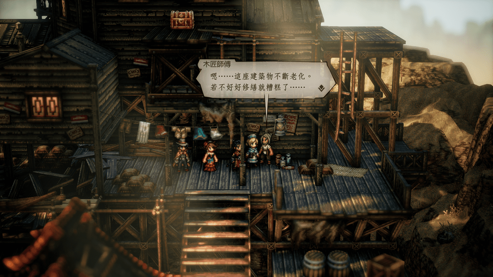
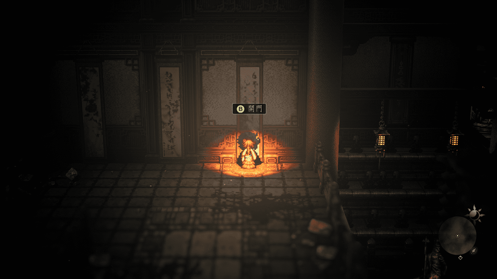
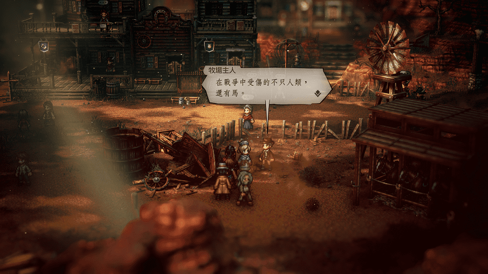
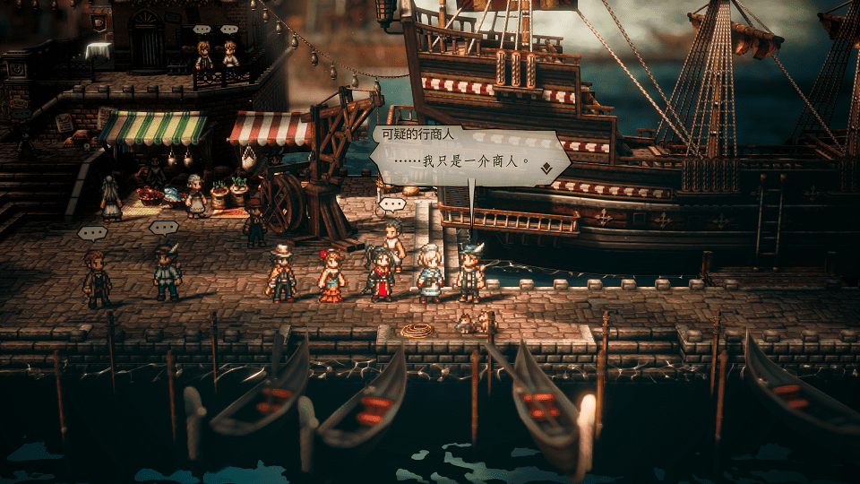
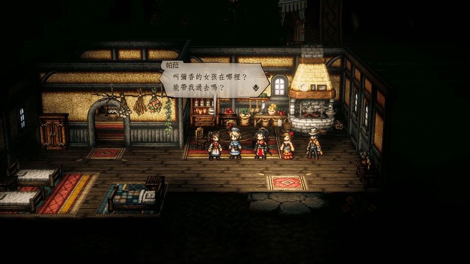

丙午地區 Hinoeuma
NPC
塞伊-東區
木匠師傅

Solution
塞伊-東區
舞姬雕像的下層右側，對旁邊有桶子的
市民
探/聽
得知卡納布萊茵的水道也是鳥國設計的線索
隨後前往
卡納布萊茵
的酒館，找到
前鳥國木匠
買/取
大蛇城塞的設計圖
到手後帶回去給木匠師傅
Reward
6000元
增強物防的堅果(大)
NPC
塞伊
年輕劍士
Solution
單人(連NPC都不能召) 進入 東塞伊沙道→腐朽寺廟 打敗 砍人魔 卡瑪
進入腐巧寺廟後存檔點左邊上層的隱藏寶箱順便拿
炎龍之矛(物攻+318、迴避+95、火屬性傷害加乘)

打BOSS時需準備 無視弱點的破防手段 (不管是道具或技能皆可)不然會破不了無雙架式
個人覺得這場戰鬥中 劍士的 反擊太刀 還不錯用 但這只是眾多過關方法的其中之一而已
打敗BOSS後會獲得 紀念之刀 之後將它還給 年輕劍士 即可完成任務
還他後再用學者搶過來~真鬼畜!!
Reward
12000元
恢復HP/SP的果醬
NPC
庫國-城下町- 道具店旁的馬舍
出租馬匹的女性
Solution 1
至西大陸 百貨公司城外的 東威古羅布森道
擊昏 帶著馬匹的男子後 回去找 出租馬匹的女性
Solution 2
至西大陸 瓦茲樂修(商人初始)
邀請 牧場主人 入隊後回去找 出租馬匹的女性

Reward
20000元
增加速度的堅果(大)
另外既然都到庫國解支線了，那代表劍士已經過最終章
可順便至 庫拉雷吉港-碼頭- 可眺望碼頭的高處找 「百屍 」 邦德拉姆 買/取 歷戰之劍
NPC

庫國-城下町- 酒館前
兩人兒時的玩伴
Solution
各自擊昏上面爭吵的兩人即可
Reward
10000元
最強之矛(物理攻擊+338 低命中但命中必暴擊)
最強之盾(物防+108、屬防+108 受到傷害必暴擊)
NPC
庫國-朱玄城前 寶物殿 內 寶物官
Solution
兩件寶物 鳳凰扇 和 龍頭壺 皆在西大陸的港口
鳳凰扇
至西大陸 庫拉雷吉港-碼頭 找 形跡可疑的男子 買/取
龍頭壺
至西大陸 卡納布萊茵(水道城) 登船處附近 找 可疑的商人 買/取

待兩件寶物都拿到手後帶回找寶物官即可
Reward
15000元
修羅錫杖(物攻+174、屬攻+330、迴避+102)
NPC
庫國-朱玄城前 五重塔內 自動進入劇情
Solution
通過塔內所有試煉即可
就不附每層守護者的弱點了，因為每層皆有存檔當，而且也沒有難到需要看攻略才能過的程度
基本上你能到達庫國辦這個任務就應該能通關才對
Reward
20000元
祈禱師之羽衣(物防121、屬防+220、行動後恢復HP)
Comment
踏破第二層可得：拐棍(物攻+329、命中+102、低機率進行反擊)
踏破最上層可得：職業 祈禱師
NPC
完成劍士、舞娘終章及其協力故事前+後編 前往 庫國-城下町 存檔點附近找 彌香
Solution
向 彌香 旁的 重臣 弁慶 問話可獲取提示 順便 買/取 他身上的 歷戰之槍
前往舞娘位在 庫羅普德爾 的家 邀請舞娘的妹妹 帕菈 入隊 帶去找 彌香 後自動帶入劇情

劇情後找位在 彌香 附近的 山賊 買/取 被偷的 耳飾
把它帶回給 彌香 完成任務
Reward
10000元
彌香的護身符(物防+100、命中+100、速度+100)